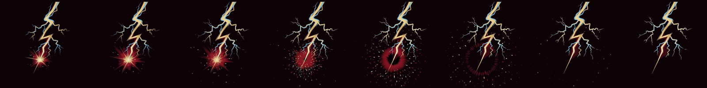
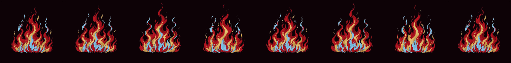
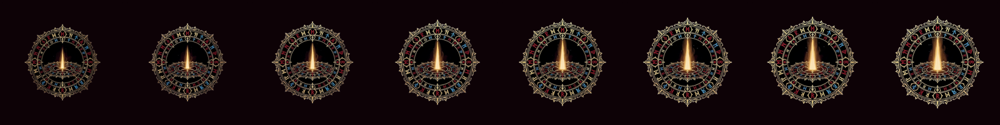
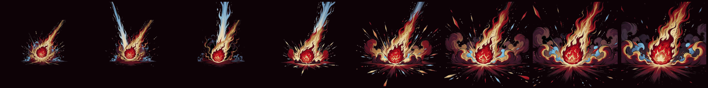
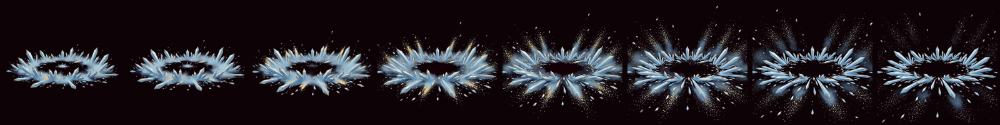

雷擊
lightning_strike14 幀
← 左右滑動看完整幀序列
哥德手繪風，五支特效各 14 幀、已去背。每列橫向抽 8 幀，襯在遊戲實際的深色地面上。
lightning_strike14 幀
← 左右滑動看完整幀序列
fire_zone14 幀
levelup_circle14 幀
meteor_impact14 幀
frost_nova14 幀
產製：Grok 影片生成 → video-sprite-extract --no-stabilize 拆格去背。
配色對齊遊戲調色盤（舊金 #E8C46A、血紅 #C8203C、冰藍 #57C7FF）。
--no-stabilize 不能省——去背工具原本是為走路循環寫的，會把「面積變化」
判定成鏡頭在動而截斷影片，但特效的面積變化正是特效本身。